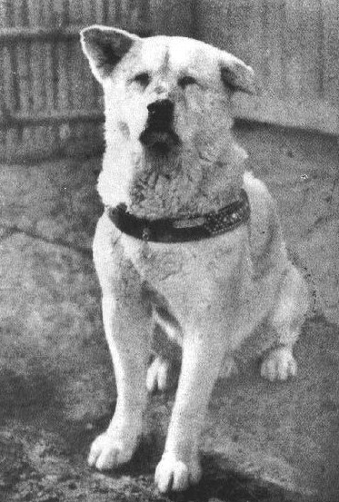

Акита возникла в районе Одате префектуры Акита, в северо-восточной части главного японского острова и была выведена как охотничья и сторожевая собака. В прошлом порода была также известна как одате-ину и кадзуно-ину — по названию местностей происхождения. Кроме того, такие собаки были обнаружены в граничащих с Акитой префектурах Аомори и Иватэ, характеризующихся такими же суровыми зимами.
 Данные археологических исследований, в результате которых были обнаружены останки шпицеобразных собак, датирующиеся примерно II тысячелетием до нашей эры, и результаты генетических исследований показали, что акита является одной из 14 древнейших пород собак. Помимо всего прочего, сохранились древние рисунки с изображением собак, напоминающих современных акит.
Данные археологических исследований, в результате которых были обнаружены останки шпицеобразных собак, датирующиеся примерно II тысячелетием до нашей эры, и результаты генетических исследований показали, что акита является одной из 14 древнейших пород собак. Помимо всего прочего, сохранились древние рисунки с изображением собак, напоминающих современных акит.
Для сохранения и развития охотничьих качеств в Японии в VI веке были основаны клубы любителей этих собак. Они составляли инструкции по содержанию, разведению, обучению. В XV веке были учреждены племенные книги, в которых записывались кличка, происхождение, окрас и другие сведения.
Первоначально японские собаки имели небольшие или средние размеры. С 1603 года в округе Акита для собачьих боёв использовались акита матаги. С 1868 года их скрещивали с тоса-ину и мастифами, в результате чего размеры собак увеличились, но были потеряны характерные для шпицеобразного типа черты.
Несмотря на то, что в 1908 году собачьи бои были запрещены, порода сохранилась и улучшилась, став японской породой крупных собак, а девять её выдающихся представителей в 1931 году были названы «Памятниками природы»
Во время Второй мировой войны использовали чаще немецких овчарок, владельцы акита стали скрещивать их с немецкими овчарками. После Второй мировой войны порода разделилась на три типа: акита матаги; бойцовая акита; акита, скрещённая с немецкой овчаркой. В США на основе акиты была выведена американская акита. Считается, что в Америку первых японских акита привезла Хелен Адамс Келлер.
Японская акита — крупная порода собак, выведенная в горных районах северной Японии как охотничья порода. Японцы называют эту собаку «сокровище Японии». Высота в холке кобелей составляет 67 см, сук — 61 см, Вес — от 40—50 кг.
Акита прекрасно чувствует себя как в городской квартире, так и на улице, в вольере. Шерсть не требует сложного ухода — достаточно прочёсывать её один раз в неделю. Во время сезонной линьки нужно прочёсывать чаще, 3—4 раза в неделю, помогая собаке избавиться от отмирающей шерсти. Стричь акиту не рекомендовано. Мыть необходимо примерно 2—3 раза в год, используя при этом специальные шампуни. Каждые несколько дней требуется чистка зубов, и 1—2 раза в месяц подстригание когтей собаки.

Длинношёрстная акита-ину — разновидность породы, отличающаяся от стандартных особей значительно более длинным волосяным покровом. Особенно выделяются у таких собак очёсы и длинная шерсть на ушах, хвосте и на задней стороне лап. В остальном данные собаки соответствуют стандарту породы акита-ину, хотя некоторые заводчики утверждают что у длинношёрстных акита-ину чаще бывает крупнее и костяк. Некоторые исследователи считают что ген длинношерстности акиты унаследовали от собаки породы Карафуто-Кен (Karafuto Ken 樺太犬). Заводчица лаек М. Г. Дмитриева-Сулима сообщала в 1898 году о существовании акитоподобных собак у сахалинских нивхов и в Витимской тайге. Более того, в 30-е годы Карафуто Кен («сахалинцы») использовались японцами для реконструкции породы акита-ину. В настоящий момент длинная шерсть у акита-ину расценивается как отклонение от стандарта и может быть учтена на породной выставке как недостаток.

В 1932 году на всю Японию прославился акита-ину по кличке Хатико. Хатико каждый день встречал хозяина, возвращавшегося после работы на электричке. Однажды хозяин умер на работе, но пёс несколько часов прождал того на вокзале. В течение 9 лет после смерти хозяина пёс в одно и то же время приходил на станцию и ждал его возвращения с работы. После его смерти, ввиду широкого резонанса, в стране был объявлен день траура, и Хатико был воздвигнут памятник. Во время Второй мировой войны памятник был уничтожен — металл памятника пошёл на военные нужды. После окончания войны, в августе 1948 года, памятник был восстановлен. Сегодня статуя Хатико у станции Сибуя является местом встречи влюблённых, а сам образ пса в Японии стал примером беззаветной любви и верности.
На истории Хатико были основаны фильмы 1987 года «История Хатико» (яп. ハチ公物語) и ремейк 2009 года «Хатико: Самый верный друг» с участием Ричарда Гира.